Hiraizumi
Hiraizumi · Iwate
Hiraizumi
Highlighted on the Iwate map.
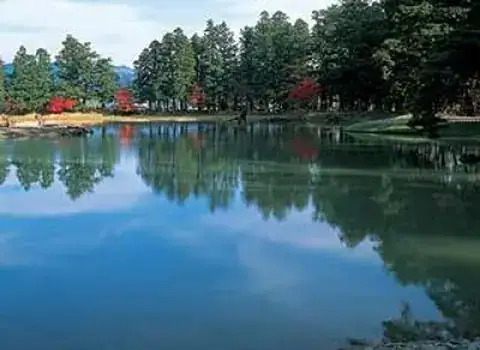
Stay
旅館アイリス悠
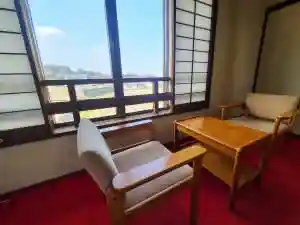
Ryokan Airisu Yuu
Ryokan inn in Hiraizumi, Iwate.
旅館 舞鶴
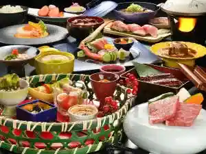
Ryokan Maizuru
Ryokan inn in Hiraizumi, Iwate.
平泉ホテル武蔵坊
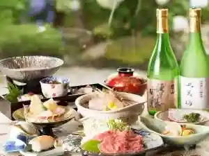
Hiraizumi Hoteru Musashi Bou
Hotel in Hiraizumi, Iwate.
奥州平泉温泉 そば庵 しづか亭
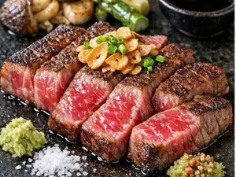
Oushuu Hiraizumi Onsen Soba Iori Shizuka Tei
Onsen lodging in Hiraizumi, Iwate.
Dining
夢乃風
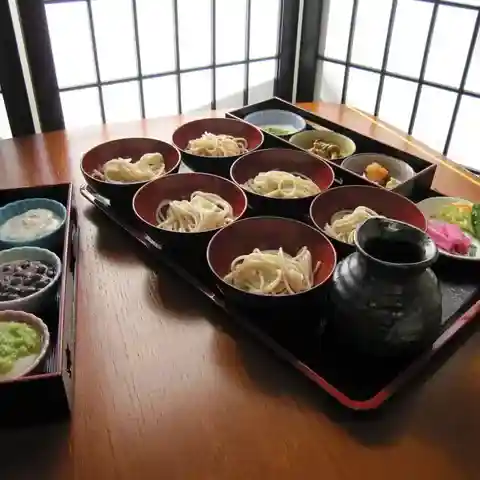
Yumeno Kaze
Noodle shop in Hiraizumi, Iwate.
駅前芭蕉館
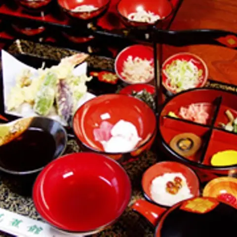
Ekimae Bashou Kan
Soba restaurant in Hiraizumi, Iwate.
芭蕉館
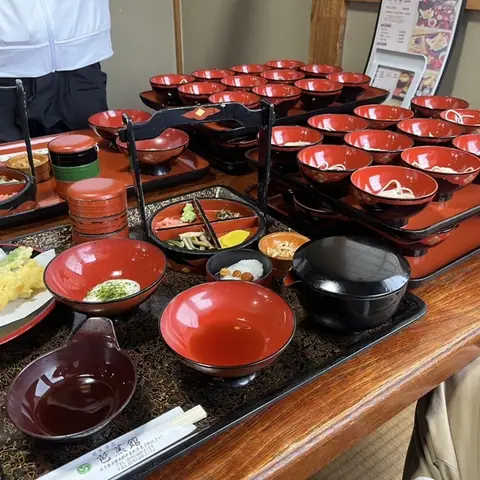
Bashou Kan
Soba restaurant in Hiraizumi, Iwate.
そば処義家
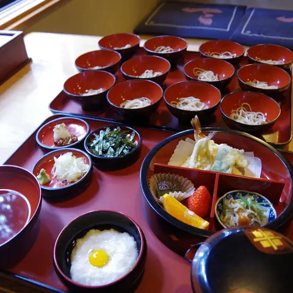
Soba Tokoro Yoshiie
Soba restaurant in Hiraizumi, Iwate.
ラーメンショップ 平泉店
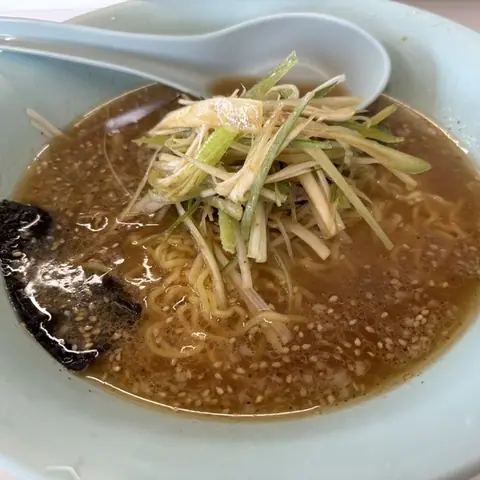
Raamenshoppu Hiraizumi Mise
Ramen shop in Hiraizumi, Iwate.
かんざん亭
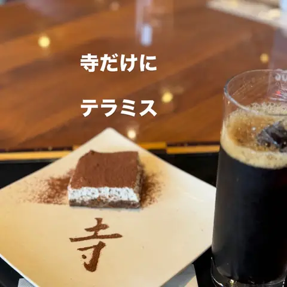
Kanzan Tei
Soba restaurant in Hiraizumi, Iwate.
泉橋庵 支店
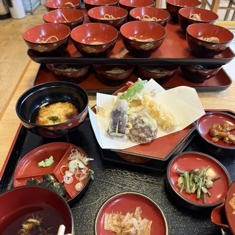
Senkyou Iori Shiten
Soba restaurant in Hiraizumi, Iwate.
SATO
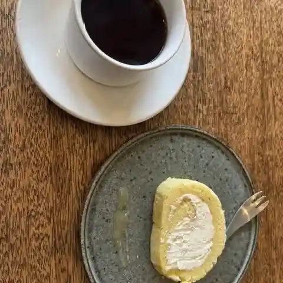
Sato
Yoshoku (Western-style) restaurant in Hiraizumi, Iwate.
衣関屋
Koromo Sekiya
Soba restaurant in Hiraizumi, Iwate.
きんいろぱん屋
Kin'Iropan Ya
Bakery in Hiraizumi, Iwate.
奥の細道展
Oku No Hosomichi Ten
Japanese sweets café in Hiraizumi, Iwate.
登龍門
Touryuu Mon
Ramen shop in Hiraizumi, Iwate.
そば庵しづか亭
Soba Iori Shizuka Tei
Ryokan restaurant in Hiraizumi, Iwate.
麺房 高松庵 平泉店
Men Bou Takamatsu Iori Hiraizumi Mise
Soba restaurant in Hiraizumi, Iwate.
道の駅 平泉
Michi No Eki Hiraizumi
Roadside-station eatery in Hiraizumi, Iwate.
KOZENJI cafe
Kozenji Cafe
Gelato and ice-cream shop in Hiraizumi, Iwate.
泉橋庵 総本店
Senkyou Iori Souhonten
Udon restaurant in Hiraizumi, Iwate.
(有)千葉恵製菓
( Ari ) Chiba Megumi Seika
Japanese sweets shop in Hiraizumi, Iwate.
松栄堂 弁慶園
Shouei Dou Benkei Sono
Japanese sweets shop in Hiraizumi, Iwate.
松風庵
Matsukaze Iori
Soba restaurant in Hiraizumi, Iwate.
吉野屋
Yoshinoya
Café in Hiraizumi, Iwate.
ラーメン あさひ野
Raamen Asahi No
Ramen shop in Hiraizumi, Iwate.
武蔵坊
Musashi Bou
Hotel restaurant in Hiraizumi, Iwate.
道の駅 平泉 ファーストフード
Michi No Eki Hiraizumi Faasutofuudo
Gelato and ice-cream shop in Hiraizumi, Iwate.
Sights
Daimonji Campsite
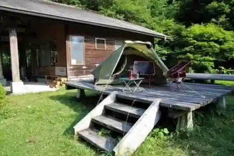
A quiet campground surrounded by nature. Weather permitting, you can view the stars in the sky at night.
Restaurant Gen
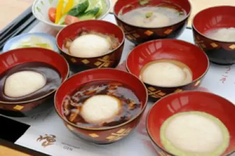
Restaurant Gen is located in front of Chusonji Temple and Tsukimizaka.
Hiraizumi Rest House
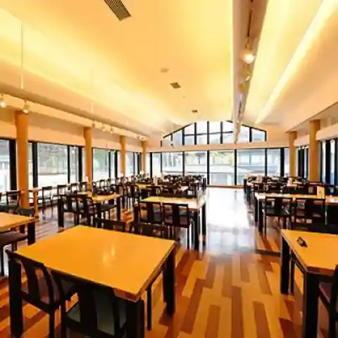
A resting place in front of the gate of Chusonji Temple in Hiraizumi.
Lala Iwate Hiraizumi Shop
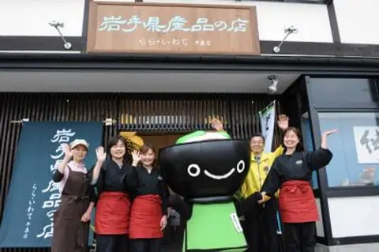
Located in front of Tsukimizaka, this is a shop selling local products that you can easily stop by.
Benkei Chikaramochi (Local Sweet)
This is the signature sweet from Yoshinoya, a long-established confectionery shop in Hiraizumi town that has been in business since 1919.
Roadside Station Hiraizumi
Roadside Station Hiraizumi opened on April 27, 2017.
Iwate Prefectural Hiraizumi World Heritage Guidance Center
Iwate Prefectural Hiraizumi World Heritage Guidance Center
Hiraizumi Dagashi (Old-Style Sweets)
These are old-fashioned handmade sweets made using local bean flour from Hiraizumi.
Hiraizumi [World Heritage Site]
, are the first cultural heritage sites in Tohoku to be registered as World Heritage sites.
Motsuji Pure Land Garden [World Heritage Site]
Motsuji Pure Land Garden [World Heritage Site]
Hiraizumi Cultural History Museum
This is a museum located at the main entrance of Chusonji Temple that introduces the glory of Hiraizumi, the golden Buddhist capital, and Hiraizumi during the Date period.
Yanagi no Gosho ruins
The Yanaginogosho ruins, which are said to have been built by the first generation Kiyohira and redeveloped by the third generation Hidehira, are highly likely to correspond to Heisenkan (government office).
Chusonji Temple [World Heritage Site]
This is the main temple of the Tendai sect of Buddhism in the Tohoku region.
Hakusan Shrine
There is an outdoor Noh stage that is designated as a nationally designated important cultural property.
Takkoku no Iwaya Bishamon-do Hall
Even before Kiyohira settled in Hiraizumi, several temples had already been built in and around Hiraizumi.
Kanjizaio-in Temple Ruins [World Heritage Site]
Kanjizaio-in Temple Ruins [World Heritage Site]
Chusonji Zazen, Sutra Copying and Dharma Talk
Chusonji zazen, sutra copying, and sermon experience
Takadate Gikeido
Takadachi is a hill located to the east of Chuson-ji Temple, and is also called Hangandate.
Ennen no Mai Dance
It is dedicated to the gods and Buddha during the festival of Matara God on the 20th day of the new year (20th night festival) following the regular ritual of the Sanmiku.
Motsuji Temple [World Heritage Site]
Motsu-ji Temple, a separate head temple of the Tendai sect, is called Iiozan (Mt.
Muryokoin Ruins [World Heritage Site]
Muryoko-in Temple, built by the third generation Hidehira, is modeled after the Phoenix Hall at Uji Byodo-in Temple.
Jogyodo Hall
This hall was rebuilt in 1732 by Date Yoshimura, the feudal lord of Sendai.
Basho Haiku Monument
Basho, who visited this place in May of the second year of Genroku (1689), composed the following poem in memory of the unfortunate Lord and Servant Yoshitsune.
Saigyo Sakura Forest
This is a famous spot for cherry blossoms that was once written about in a poem by Saigyo, saying, "The cherry blossoms of Mt.
Kinkeisan [World Heritage Site]
Mount Kinkeisan is an elegant cone-shaped mountain. According to legend, Hidehira built the mountain in a single night by having laborers carry stones as far as the Kitakami River, and buried a pair of golden chickens.